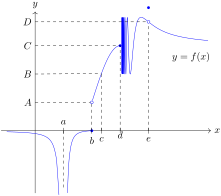

Provide a rigorous definition of one-sided limits.
Use one-sided limits to evaluate limits at a point.
Use limit rules and formulas for one-sided limits.
Use one-sided limits to evaluate the limit at a point.
SubsectionDefinition
One-sided limits provide a convenient means of describing how a function \(f\) behaves as its inputs approach a value \(a\) from one side or the other. We go straight to their formal definitions, mainly to introduce the notation and terminology.
Definition5.1.One-sided limits.
Let \(f\) be a function, and let \(a\in \R\text{.}\)
Left-hand limit.
Assume \(f\) is defined on an open interval of the form \((c,a)\text{.}\) We say the left-hand limit of \(f\) as \(x\) approaches \(a\) from the left exists if there is a value \(L\) satisfying the following property: for all \(\epsilon > 0\text{,}\) there exists a \(\delta> 0\) such that if \(a-\delta< x< a\text{,}\) then \(\abs{f(x)-L}< \epsilon\text{.}\)
When this is the case we call \(L\) the left-hand limit of \(f\) as \(x\) approaches \(a\) from the left, and write
When no such \(L\) exists, we say that the left-hand limit \(\lim\limits_{x\to a^-}f(x)\) does not exist.
Right-hand limit.
Assume \(f\) is defined on an open interval of the form \((a,d)\text{.}\) We say the right-hand limit of \(f\) as \(x\) approaches \(a\) from the right exists if there is a value \(L\) satisfying the following property: for all \(\epsilon > 0\text{,}\) there exists a \(\delta> 0\) such that if \(a< x< a+\delta\text{,}\) then \(\abs{f(x)-L}< \epsilon\text{.}\)
When this is the case we call \(L\) the right-hand limit of \(f\) as \(x\) approaches \(a\) from the right, and write
When no such \(L\) exists, we say that the right-hand limit \(\lim\limits_{x\to a^+}f(x)\) does not exist.
Informally we can describe left- and right-handed limits in much the same way as limits. We have \(\lim\limits_{x\to a^-}f(x)=L\) if we can make \(f(x)\) arbitrarily close to \(L\) for all \(x\) sufficiently close to, and lying to the left of \(a\text{.}\) An exactly analogous statement holds for the right-hand limit statement \(\lim_{x\to a^+}=L\text{.}\)
Example5.2.Visualizing one-sided limits.
Suppose \(f\) is the function whose graph is given below.

Figure5.3.Graph of function \(f\)
Describe the behavior of \(f\) near the inputs \(a\text{,}\)\(b\text{,}\)\(d\text{,}\) and \(e\) using one-sided limit notation.
Solution.
Neither \(\lim\limits_{x\to a^-}f(x)\) nor \(\lim\limits_{x\to a^+}f(x)\) exists, since the function values get arbitrarily large (and negative) as \(x\) approaches \(a\) from either side.
Thus in this case the left- and right-handed limits of \(f\) both exist, but do not agree.
We have \(\lim\limits_{x\to d^-}f(x)=C\text{.}\) By contrast, \(\lim\limits_{x\to d^+}f(x)\) does not exist as the values of \(f\) oscillate wildly as \(x\) approaches \(d\) from the right.
Since the definition of a one-sided limit differs from that of the limit, only in so far as we restrict our attention to inputs \(x\) lying to one side or the other of the “limit point” \(a\text{,}\) it should come as no surprise that all the limit rules (sum, quotient, sandwich, etc.) and formulas (polynomial evaluation, rational evaluation, etc.) discussed thus far apply with equal validity to one-sided limits. This means you may compute one-sided limits with these rules in exactly the same way as you do with normal limits.
Previously our definition of limit only applied to points \(a\in \R\) for which the function was defined for all \(x\ne a\) on an open interval \((c,d)\) containing \(a\text{.}\) The language of one-sided limits allows us to extend this definition to “endpoints” of the domain, as the next definition makes clear. Theorem 5.6 guarantees that this definition is a consistent extension of Definition 4.1.
Definition5.5.Limit at endpoints of domain.
Let \(f\) be a function, and let \(a\in \R\text{.}\)
Right endpoint.
If \(f\) is defined for all \(x\) on an open interval \((c,a)\text{,}\) but not for all \(x\ne a\) in a full open interval containing \(a\text{,}\) then we say the limit of \(f\) as \(x\) approaches \(a\) exists if \(\lim\limits_{x\to a^-}f(x)\) exists. When this is the case, we define
If \(f\) is defined for all \(x\) on an open interval \((a,d)\text{,}\) but not for all \(x\ne a\) in a full open interval containing \(a\text{,}\) then we say the limit of \(f\) as \(x\) approaches \(a\) exists if \(\lim\limits_{x\to a^+}f(x)\) exists. When this is the case, we define
As was suggested by Example 5.2 and made official by the next theorem, \(\lim_{x\to a}f(x)\) exists if and only if both one-sided limits exist and are equal.
Theorem5.6.One-sided limits test.
Suppose \(f\) is a function defined everywhere on an open interval containing the point \(a\in \R\text{,}\) except possibly at \(a\) itself. The limit \(\lim\limits_{x\to a}f(x)\) exists if and only if the one-sided limits \(\lim\limits_{x\to a^-}f(x)\) and \(\lim\limits_{x\to a^+}f(x)\) exist and are equal. Using logical shorthand:
As a consequence, if one of the one-sided limits does not exist, or if both one-sided limits exist but are not equal to one another, then the limit \(\lim\limits_{x\to a}f(x)\) does not exist.
Theorem 5.6 is particularly useful in that it gives us a means of potentially showing that a limit does not exist. The next classic example illustrates this nicely.
Example5.7.The sign function.
The sign function is the function \(f\) with domain
Use Theorem 5.6 to decide whether \(\lim_{x\to 0}f(x)\) exists.
Solution.
We compute the left and right limits of \(f\) at \(0\) separately. As you will see, the piecewise nature of the definition of \(\abs{x}\) will make these quite easy.
We thus see that the two one-sided limits exist, but are not equal to one another. We conclude, using Theorem 5.6 that the limit of \(f\) at 0 does not exist.
SubsectionClassic trig limits
The following classic limit formulas are proved using one-sided limits computed with the help of some lovely geometric arguments and the sandwich theorem.
Our second computation of the limit in Example 5.9 seemed to use a “substitution” rule of the following sort: that is, we computed a limit of the form \(\lim_{x\rightarrow a}f(g(x))\) by observing that \(\lim_{x\to a}g(x)=b\) and then computing, using the substitution \(t=g(x)\text{,}\) that
Intuitively this seems straightforward, since as \(x\) approaches \(a\text{,}\)\(t=g(\theta)\) approaches \(b\text{.}\) But in fact the claim is simply not true in general! Luckily for us, the approach does work when the “substitution function” is of the form \(g(x)=cx+d\text{,}\) a so-called affine function. As such we will use such methods without further comment.